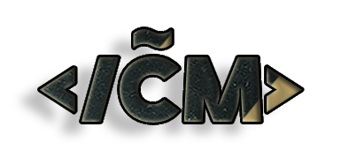

Me chamo Cauã Mark de Pinho, tenho 18 anos e moro na Cidade de Blumenau. Tenho Ensino Médio completo e pretendo fazer um ensino superior. Atualmente estou aprendendo Python pelo programa Entra 21. Gosto de socializar e trabalhos que envolvam o trabalho em equipe, procuro sempre estar desenvolvendo meu conhecimento e aprendendo coisas novas. Quero trabalhar na área de tecnologia,pois sou uma pessoa curiosa e determinada, além disso, desde muito cedo tive contato com a tecnologia/programação. Nivel de ingles Básico, conseguindo uma básica comunicação e leitura. Email de contato:s mark.caua6@gmail.com
